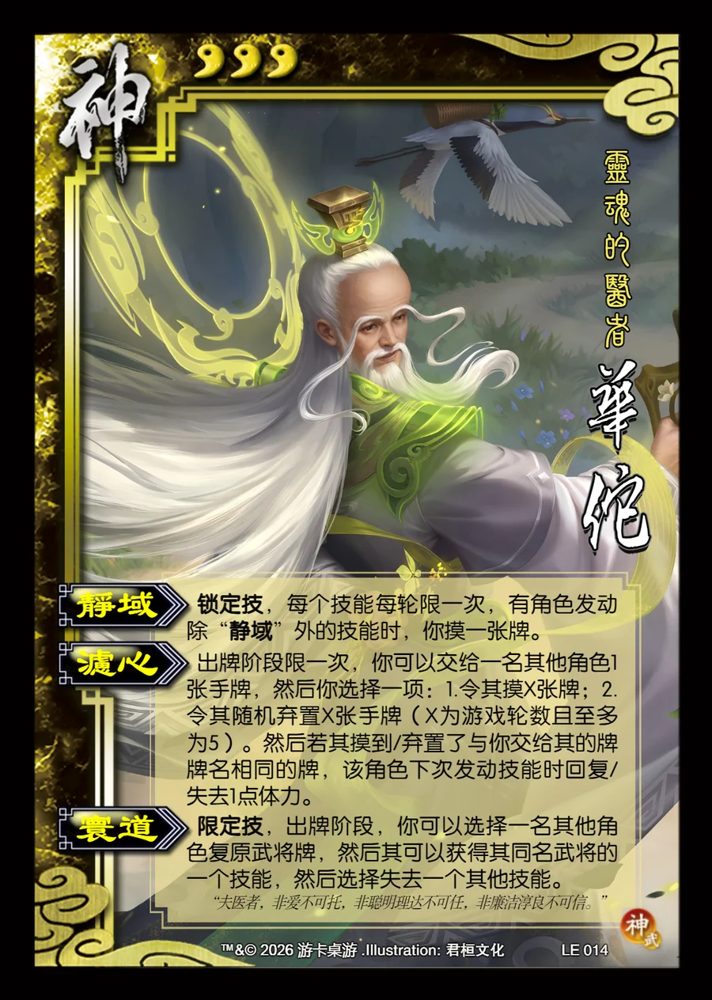

点击卡面查看大图
神
神华佗
♥3灵魂的医者
静域锁定技
锁定技，每个技能每轮限一次，有角色发动除“静域”外的技能时，你摸一张牌。
滤心
出牌阶段限一次，你可以交给一名其他角色1张手牌，然后你选择一项：1.令其摸X张牌；2.令其随机弃置X张手牌（X为游戏轮数且至多为5）。然后若其摸到/弃置了与你交给其的牌牌名相同的牌，该角色下次发动技能时回复/失去1点体力。
寰道限定技
限定技，出牌阶段，你可以选择一名其他角色复原武将牌，然后其可以获得其同名武将的一个技能，然后选择失去一个其他技能。
“夫医者，非爱不可托，非聪明理达不可任，非廉洁淳良不可信。”